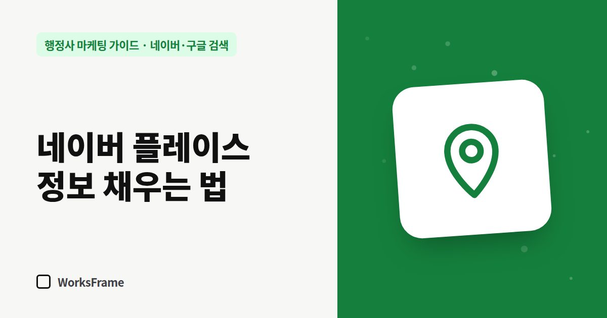

네이버·구글 검색
네이버 플레이스 정보, 이렇게 채우면 고객이 이해합니다 — 행정사 편
한 줄 답
소개글 첫 두 줄에 업무와 대상을, 대표 키워드엔 ‘지역 + 업무’를 넣고, 사진은 외관 → 상담 공간 → 대표 순으로 올리세요. 소식은 한 달에 두 번이면 충분합니다.

플레이스에 들어온 고객은 전화 버튼을 누르기 전에 소개, 사진, 리뷰를 훑어봅니다. 비어 있으면 “운영하는 곳이 맞나?” 싶어 다음 사무소로 넘어갑니다.
소개글: 첫 두 줄에 업무와 대상
소개글은 앞부분만 보이는 경우가 많습니다. 첫 두 줄에 무엇을, 누구에게 하는지 적으세요.
○○역 인근 행정사사무소입니다. 외국인 체류·비자(연장·변경·영주)와 외국인 고용 사업장 서류를 주로 합니다. 상담은 전화·카카오톡·방문으로 받습니다.
그 아래에 상담 시간, 준비물, 주차 안내를 짧게.
대표 키워드: 지역 + 업무
대표 키워드는 고객이 검색할 말로 고릅니다.
- 지역 + 업무: “○○동 행정사”, “○○ 출입국 행정사”
- 업무 + 상황: “체류기간 연장”, “공장등록”
- 사무소명 자체는 굳이 넣지 않아도 검색됩니다
키워드 고르는 방법은 행정사 키워드 고르는 법에 자세히 정리했습니다.
사진: 신뢰를 주는 순서
| 순서 | 사진 | 이유 |
|---|---|---|
| 1 | 건물 외관·입구 | 찾아오는 길 |
| 2 | 상담 공간 | 편하게 상담할 수 있는 곳인지 |
| 3 | 대표 행정사 | 누구와 이야기하는지 |
| 4 | 자격·등록 게시물 | 해당 등록증이 있다면 |
고객 서류나 개인정보가 찍힌 사진은 올리지 마세요.
소식: 한 달에 두 번이면 충분
“이번 달 체류기간 연장 준비물 정리”, “추석 연휴 상담 안내”처럼 짧은 소식을 월 2회만 올려도 살아 있는 사무소로 보입니다. 홈페이지에 쓴 업무 안내 글을 요약해 링크를 거는 방식이 가장 편합니다.
리뷰 답글: 짧고 구체적으로
- 감사 인사 + 어떤 업무였는지 한마디 (개인 정보는 빼고)
- 불만 리뷰엔 변명 대신 사실 확인과 개선 약속
- 리뷰를 사거나 대가를 주고 쓰게 하는 것은 하지 마세요 (후기 받는 법)
자주 묻는 질문
영업시간을 비워 두면 안 되나요?
비어 있으면 고객이 언제 연락해야 할지 모릅니다. 예약제라면 “예약 상담”으로라도 표시하세요.
플레이스 정보를 자주 바꾸면 불리한가요?
사실이 바뀌었다면 바로 고치는 게 맞습니다. 불리한 것은 틀린 정보를 그대로 두는 것입니다.